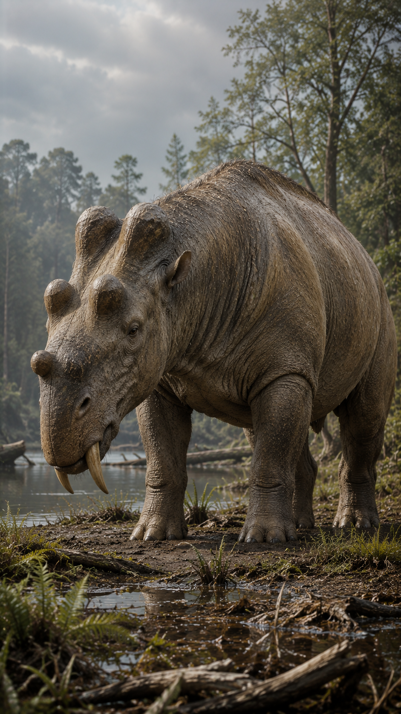
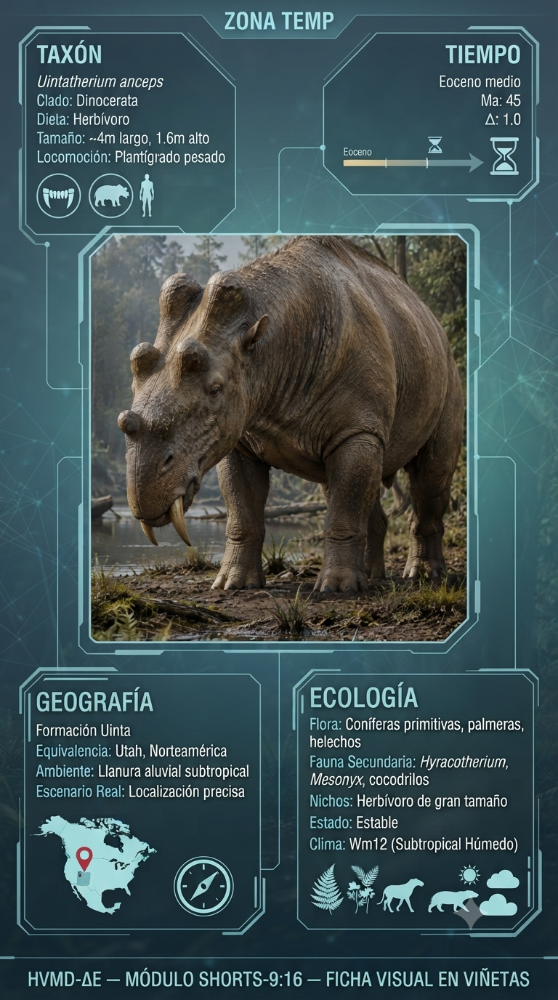
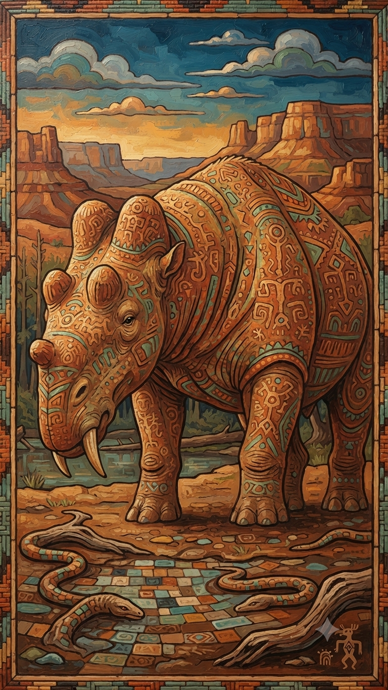

Paleoficha de PalEntropía



TAXÓN:
Uintatherium anceps
CLADO:
Dinocerata (Mamíferos placentarios basales)
DIETA:
Herbívoro; ramoneador de hojas y vegetación blanda, con colmillos usados principalmente para exhibición y defensa.
TAMAÑO:
Aproximadamente 4 metros de longitud y unas 2 toneladas de peso.
LOCOMOCIÓN:
Cuadrúpeda graviportal; extremidades robustas adaptadas para soportar un gran peso.
TIEMPO:
Eoceno Medio, aproximadamente hace 45–42 millones de años.
GEOGRAFÍA:
América del Norte (Cuenca Green River).
EQUIVALENCIA PALEOGEOGRÁFICA:
Sabanas boscosas subtropicales y extensas zonas ribereñas.
AMBIENTE PALEAOECOLÓGICO:
Llanuras de inundación con elevada productividad vegetal.
ECOLOGÍA:
• Flora: Bosques de angiospermas, palmeras y coníferas.
• Fauna secundaria: Diversa comunidad de mamíferos del Eoceno surgida tras la radiación posterior a la extinción del K-Pg.
• Nichos: Megaherbívoro ramoneador. Su enorme cráneo, con tres pares de protuberancias óseas y grandes colmillos superiores, estaba adaptado principalmente para exhibición, defensa y posibles combates rituales entre individuos.
• Relaciones: Representante de los Dinocerata, un linaje temprano de mamíferos gigantes que alcanzó grandes dimensiones antes de ser reemplazado ecológicamente por perisodáctilos y artiodáctilos.
CLIMA:
Wm28 (Eoceno cálido). Clima global de invernadero con temperaturas elevadas y una gran expansión de la vegetación subtropical.
ESTADO ECOLÓGICO:
Estable. Uintatherium fue uno de los grandes herbívoros dominantes del Eoceno Medio, aprovechando la extraordinaria productividad vegetal de los ecosistemas subtropicales norteamericanos.